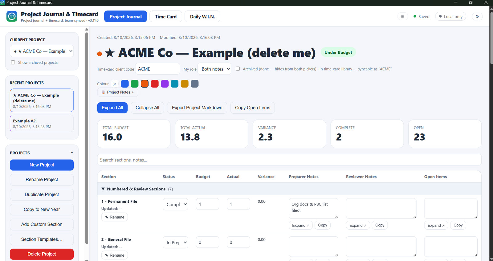
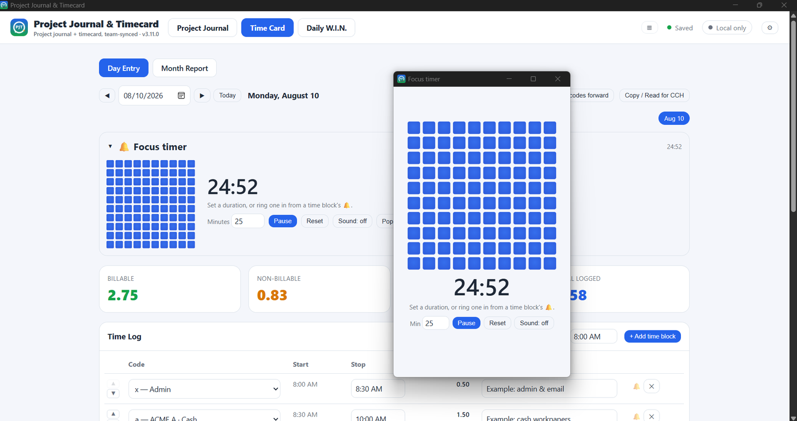
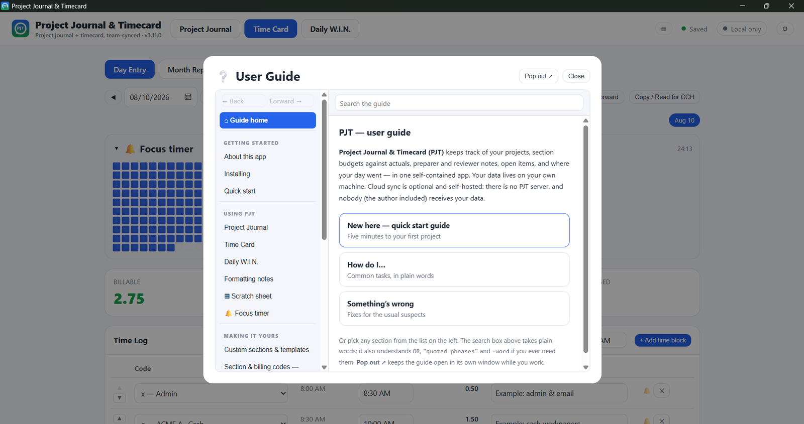

Built by one accountant.
Shipped as one file.

You set the stop time. Every block starts where the last one ended.
A hundred squares. They go as the time goes.


Windows & macOS · free · MIT licensed
Unsigned installer — your computer will ask you to confirm.
github.com/projectjournalandtimecard-PJT